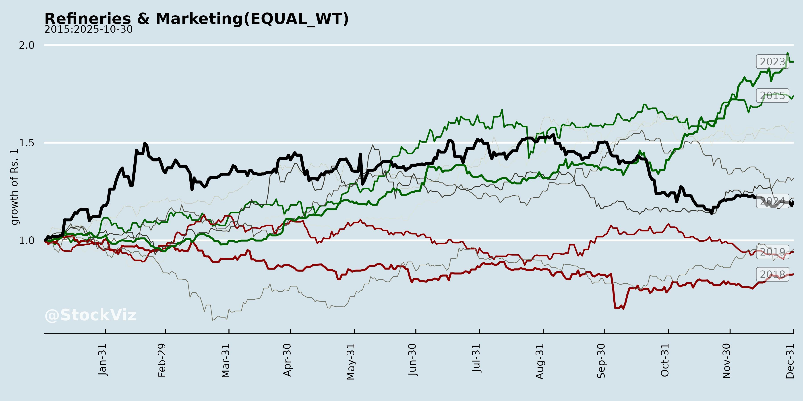
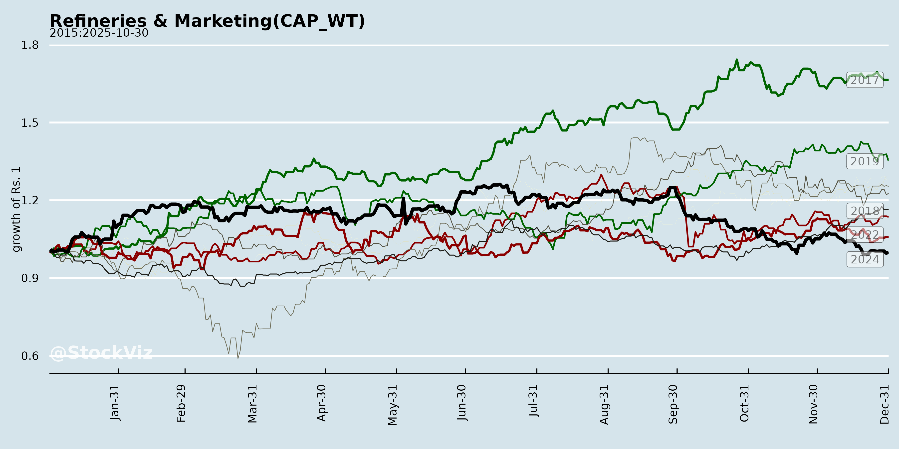
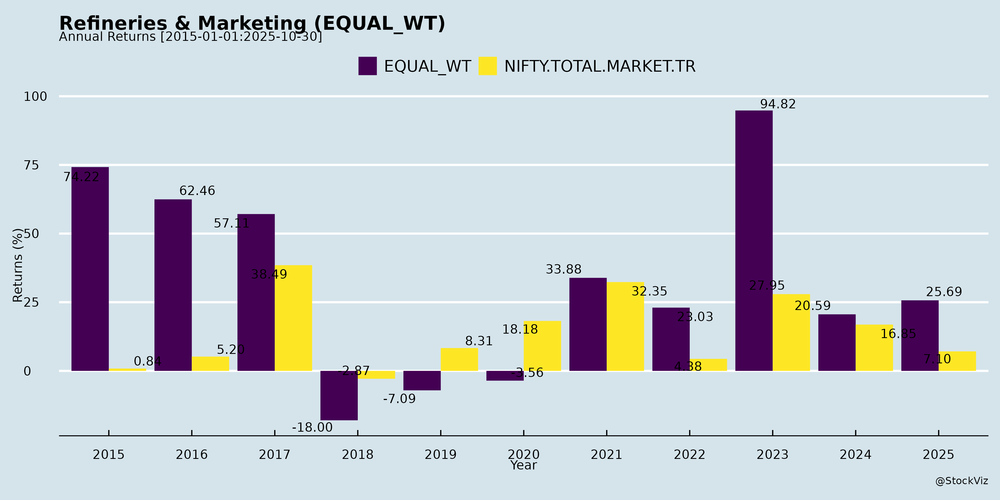
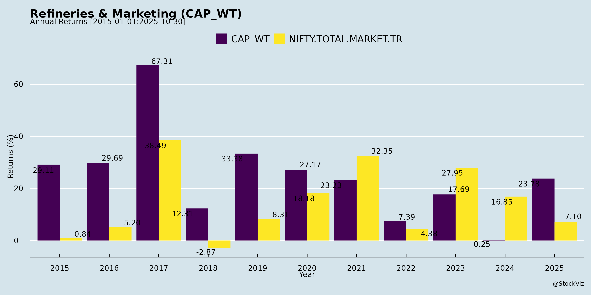
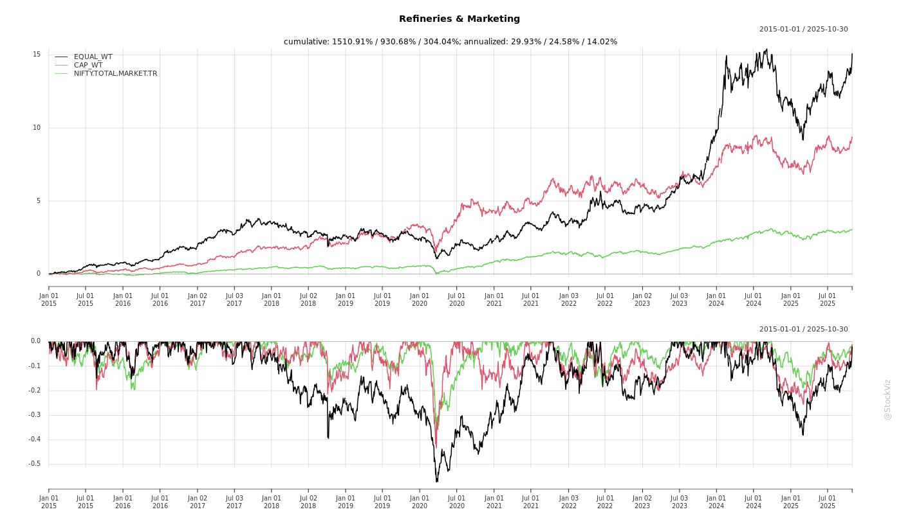
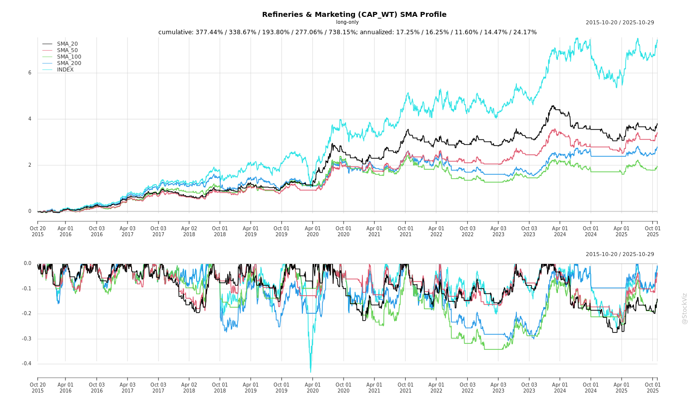
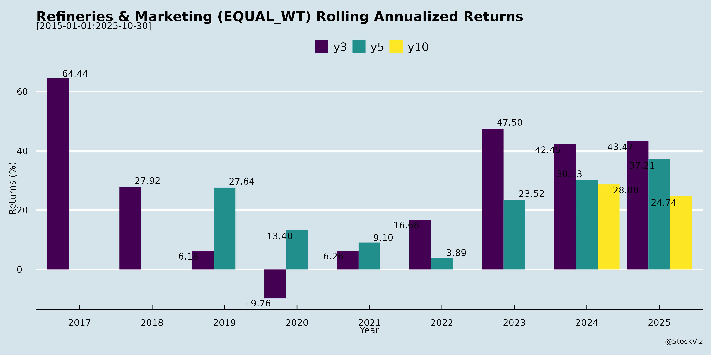

Refineries & Marketing
Industry Metrics
February 20, 2026
Annual Returns




Cumulative Returns and Drawdowns

SMA Scenarios

Current Distance from SMA
Rolling Returns


Market Cap
EBIT (% of Industry Total)
Revenue (% of Industry Total)
AI Summaries
Analyst
asof: 2025-12-03
Summary Analysis: Indian Refineries & Marketing Sector
Using the provided documents (investor meeting disclosures from Reliance, IOC, BPCL, HPCL; MRPL Q2 FY26 earnings transcript; CPCL Q4 FY25 earnings transcript), the analysis covers key Indian refiners (public & private sector OMCs). The sector shows resilience amid volatile macros, with focus on efficiency, retail expansion, and diversification. Below is a structured summary of headwinds, tailwinds, growth prospects, and key risks.
Tailwinds (Positive Drivers)
- Strong Domestic Demand & Regional Shortfalls: Resilient growth in gasoline (7% YoY), diesel (3% YoY), and ATF (1% YoY); southern MS market shortfall (~20 TMT/month, favoring CPCL). Post-monsoon diesel recovery and GST-driven auto sales boost.
- Healthy Global Cracks/GRMs: GRMs premium to Singapore benchmark (CPCL Q4: $6.22/bbl vs. $3.1; MRPL Q2 indicative double prior quarter). Supported by supply disruptions, global refinery closures (US, Australia, NZ), and tightening naphtha/diesel cracks ($20+/bbl diesel).
- Crude Sourcing Advantages: Russian opportunity crudes (30-40% basket for MRPL/CPCL) at $1-4/bbl discounts + DES terms (de-risks timing/FX). Alternatives (US, Kuwait, Africa) viable on economics; high-sulfur processing (64-65%).
- Operational Efficiencies: Record throughput (MRPL 4.4 MMT; CPCL 99.5-113% utilization), lowest EII (87.4), fuel & loss at 8.51-10.42% (target 10%). RLNG usage up (CPCL 527 TMT vs. 441 TMT prior).
- Retail & Marketing Momentum: MRPL 185 outlets (target 250 by YE25, +100-130 YoY; 140-160 KL/month/outlet). EV/CNG integration; domestic pricing stability despite crude moderation.
Headwinds (Challenges)
- Crude/GRM Volatility: Falling crude prices, weakening cracks (HSD sub-$10/bbl in FY25 vs. $13-15 prior), inventory losses ($0.06/bbl annual for CPCL), forex losses (MRPL ₹355 Cr H1).
- Geopolitical Sourcing Pressures: US scrutiny on Russian crude; govt. prioritizing “national interest/lowest cost,” but uncertainty persists (MRPL confident in alternatives).
- Maintenance Impacts: Turnarounds reduce throughput (MRPL Q1 3.5 MMT vs. Q2 4.4; CPCL FY25 units offline); startup hiccups elevate fuel & loss.
- Demand Uncertainty: Global estimates cut (0.6 mbpd); diesel softness pre/post-monsoon.
- FX & Costs: 40% export sales exposed (MRPL); logistics differentials (US vs. ME: $3-7/bbl); payables spikes (MRPL H1).
Growth Prospects
- Capacity & Integration: CPCL Cauvery Basin Refinery (9 MMT, ₹36k Cr, 6% petro index incl. PP; CCEA approval soon); MRPL Phase 4 study/review, isobutyl benzene pilot (mid-Nov25), LOBS Group II/III, SAF (20 KL/day by Jan27).
- Retail Expansion: Aggressive outlet addition (MRPL 250+ by YE25); highway/rural penetration amid 3-7% fuel demand growth.
- Diversification: SAF trials (CPCL/MRPL), petrochemicals (aromatics, PP), biofuels/hydrogen/decarbonization (MRPL power input by mid-26), value-added (pharma hexane, MTO).
- Financial Health: Deleveraging (CPCL D/E 0.39; MRPL SET repayment internal); dividends (CPCL ₹5/share); CAPEX steady (₹200-800 Cr/yr). Upgrades (CPCL Schedule A → Navratna potential).
- ESG/Governance: RLNG for net-zero, ISO certifications, S&P ESG score 46 (above India avg.); investor engagement (JM Financial confabs).
| Key Metrics Snapshot | MRPL Q2 FY26 | CPCL FY25 |
|---|---|---|
| Throughput (MMT) | 4.4 | 10.45 (99.5%) |
| GRM ($/bbl) | ~Double prior | 4.22 (full yr) |
| Russian/Opportunity % | 30-40% | ~30% |
| Retail Outlets | 185 (+18 FY26) | N/A |
Key Risks
| Risk Category | Description | Mitigants |
|---|---|---|
| Geopolitical | Russian crude curbs (30-40% reliance); US pressure. | Diversify to US/Africa/Kuwait; spot economics. |
| Macro/Volatility | Crude/FX/cracks swings; global demand cuts. | 40% exports hedged via RTP; efficiency focus. |
| Operational | Turnarounds (CPCL Aug-Sep26; MRPL none FY26 bal.); payables/F&L spikes. | High utilization history; RLNG flexibility. |
| Regulatory/Competition | Excise/RSP cuts, SAF mandates, new capacities (HPCL Rajasthan, IOCL exp.). | Domestic shortfalls; value-add premiumization. |
| Execution | Project delays (Phase 4, SAF); CAPEX overruns (₹1.5k Cr FY26 MRPL norm). | JV structures (CPCL 25:75 equity); internal funding. |
Overall Outlook: Sector balanced—tailwinds from demand/efficiencies offset headwinds via diversification. Near-term GRM resilience expected (Q3 FY26 >4.4 MMT MRPL), but monitor Russian flows/geopolitics. Growth via retail/petrochem (10-15% EBITDA upside potential); risks tilted macro (high volatility). Investor meets signal transparency amid positive sentiment.
Financial
asof: 2025-11-30
Analysis of Indian Refineries & Marketing Sector (Based on Q3 FY25 Results of RIL, IOCL, BPCL, HPCL, MRPL)
The Indian refining and marketing sector faced significant headwinds in Q3 FY25 (ended Dec 31, 2024), primarily from weak global refining margins amid oversupply, volatile crude prices, and subdued demand. Consolidated revenues were flat-to-down YoY across most players, with sharp PAT declines (e.g., IOCL down ~65% YoY, HPCL down ~40% YoY, MRPL loss-making). GRMs collapsed (IOCL $3.69/bbl, BPCL $5.95/bbl, HPCL $4.73/bbl vs. $9-14/bbl YoY). However, diversified players like RIL showed resilience via retail/digital. Below is a structured summary.
Headwinds (Key Challenges)
- Weak Refining Margins (O2C Segment): Core issue; GRMs halved YoY due to high crude costs, product discounts, and inventory losses. RIL O2C EBITDA down 10% QoQ; IOCL/BPCL/HPCL/MRPL throughput/sales flat but margins crushed.
- Subsidy/Buffer Pressures: LPG negative buffers unrecognized (IOCL ₹14,325 Cr, HPCL ₹7,599 Cr, BPCL ₹7,229 Cr), hitting revenues.
- High Costs: Finance costs up (e.g., RIL up 3% QoQ); forex losses (HPCL ₹525 Cr); elevated depreciation amid capex.
- Demand Slump: Domestic sales growth muted (BPCL +3.95%, HPCL flat); exports weak amid global oversupply.
- Governance Lapses: All PSUs (IOCL, BPCL, HPCL, MRPL) lack independent directors post-Nov 2024 resignations, risking compliance (e.g., no valid Audit Committee).
Tailwinds (Positive Factors)
- Diversification Benefits (RIL): Retail (+18% revenue YoY) and Digital Services (Jio EBITDA +16%) offset O2C weakness; PAT up 12% YoY.
- Operational Stability: Refinery utilization steady (RIL 100%+, BPCL 95%+); pipeline throughput up (IOCL +3% YoY).
- One-offs: VAT credit reversals (IOCL ₹1,837 Cr exceptional gain); cost controls (employee expenses flat).
- Debt Management: Redemptions (RIL ₹7,437 Cr NCDs); improving ratios (RIL Debt/Equity 0.42).
Growth Prospects
- Capacity & Efficiency: RIL’s integrated O2C; HPCL/IOCL expansions (e.g., HPCL Rajasthan Refinery). Long-term: New energy (RIL’s ₹75,000 Cr+ investments in solar/battery/H2).
- Retail/Digital Boom: RIL Retail sales +18% YoY (₹90,351 Cr Q3); Jio ARPU/user growth.
- Exports/Alternative Fuels: Biofuels (HPCL Biofuels sub); LNG (HPCL LNG). Demand recovery expected FY26+ with global energy transition.
- Govt. Push: PLI schemes, green hydrogen; stable subsidies.
Projected Sector Growth: Refining capacity to 450 MMTPA by 2030; marketing margins to improve with EV/demand shift (CAGR 5-7% volumes).
Key Risks
| Risk Category | Description | Impact (High/Med/Low) |
|---|---|---|
| Commodity Volatility | Crude/product price swings; forex losses (HPCL/MRPL). | High |
| Margin Compression | Sustained low GRMs ($5-8/bbl); inventory losses. | High |
| Regulatory/Subsidy | LPG buffers (₹30,000 Cr+ across PSUs); duty changes. | High |
| Geopolitical/Operational | Force Majeure (BPCL Mozambique); supply disruptions. | Med-High |
| Debt/Liquidity | High leverage (HPCL 1.26 Debt/Equity); capex funding. | Med |
| Transition | Green shift; stranded assets (e.g., MRPL losses). | Med |
| Governance | PSU board vacancies; compliance risks. | Med |
| Demand | Slow EV adoption; China oversupply. | Med |
Overall Outlook: Short-term pain from margins (FY25 PAT growth -20-30% YoY sector-wide), but tailwinds from diversification (RIL resilient) and capex bode well for FY26 recovery. Monitor crude ($70-80/bbl), geopolitics. PSUs vulnerable to subsidies/governance; RIL leads diversification.
General
asof: 2025-12-03
Analysis of Indian Refineries & Marketing Sector
Using the provided regulatory disclosures from key players (Reliance Industries Ltd., IOCL, BPCL, HPCL, MRPL, CPCL), the analysis focuses on headwinds, tailwinds, growth prospects, and key risks. These filings highlight operational, governance, diversification, and compliance themes amid a sector facing refining overcapacity, volatile crude prices, and energy transition pressures. Insights are derived strictly from the documents.
Headwinds
- Governance and Regulatory Compliance Issues: MRPL and CPCL (both govt-linked refiners) faced fines of Rs. 5,42,800 each (incl. GST) from BSE/NSE for Q2 FY26 non-compliance with SEBI LODR Reg. 17(1) on board composition, including lack of a woman independent director. Both are seeking waivers citing govt control over appointments (MoP&NG), indicating structural delays in board reconstitution that could lead to recurring penalties and scrutiny.
- Leadership Transitions: IOCL disclosed superannuation of Executive Director-Finance (Refineries HQ), Shri Subrata Chaudhuri (Nov 30, 2025), potentially disrupting short-term financial oversight in refineries amid tight margins.
- External Rating Dependencies: HPCL noted an unsolicited ESG rating of 62.2 from SES ESG Research (not commissioned), signaling vulnerability to third-party perceptions without proactive control.
Tailwinds
- ESG Momentum: HPCL’s “62.2” ESG rating (publicly available data) reflects strengths in environmental/social/governance metrics, aiding investor appeal and potential access to green financing in a sector under sustainability pressure.
- Upstream De-risking: BPCL’s step-down subsidiary (BPRL Ventures) benefits from lifting of Force Majeure in Mozambique’s Area 1 LNG project (10% PI), resuming activities post-2021 security issues. This supports long-term gas feedstock security for refining/marketing.
- Stable Disclosure Practices: Routine Reg. 30 filings across companies demonstrate proactive compliance, maintaining market transparency.
Growth Prospects
- Diversification into High-Growth Areas: RIL’s approval of Reliance Intelligence Ltd. (WOS, Rs. 1 Cr capital) and 70:30 JV with Meta (Rs. 855 Cr/~US$100 Mn initial commitment) targets Enterprise AI services. While not core refining, it leverages RIL’s tech ecosystem for non-oil revenue, closing Q4 CY25 post-approvals—signaling private players’ pivot to AI amid refining slowdowns.
- JV Synergies: RIL-Meta tie-up positions the sector for AI-driven efficiencies in refining/marketing (e.g., predictive maintenance, supply chain optimization), with RIL’s dominance offering scalable models.
- Global Partnerships: BPCL’s Mozambique stake hints at LNG integration for cleaner fuels, aligning with India’s refining expansion (e.g., BS-VI upgrades).
Key Risks
- Regulatory and Govt Dependency: Heavy reliance on MoP&NG for director nominations (MRPL/CPCL) exposes PSUs to delays/fines, eroding governance credibility and shareholder value.
- Geopolitical/Operational Disruptions: BPCL’s Mozambique reference underscores vulnerability to regional instability (e.g., Cabo Delgado security), impacting upstream supplies critical for refining.
- Leadership Vacuum: Senior exits (IOCL) could delay strategic decisions in a low-margin environment.
- Diversification Execution: RIL’s AI JV faces regulatory hurdles (MCA approvals, Q4 close) and execution risks in a nascent market.
- ESG/Reputation: Unsolicited ratings (HPCL) highlight risks from external narratives, potentially amplifying transition risks (e.g., EV shift eroding fuel marketing).
Overall Summary
The sector faces headwinds from governance fines and personnel churn (PSUs dominant), but gains tailwinds via ESG recognition and upstream resolutions. Growth prospects shine through RIL’s bold AI diversification (JV with Meta), potentially transformative for private players, while key risks center on govt bottlenecks, external disruptions, and execution in high-stakes ventures. PSUs lag in agility vs. RIL’s innovation, with near-term stability but long-term need for board reforms and tech integration to counter refining headwinds. No acute crises; focus on compliance waivers and JV progress.
Investor
asof: 2025-12-03
Summary Analysis: Indian Refineries & Marketing Sector
Using the provided documents (disclosures and earnings transcripts from RIL, IOC, BPCL, HPCL, MRPL, and CPCL), the analysis focuses on the Indian refineries and marketing companies. These reveal a sector characterized by operational resilience, investor engagement (e.g., JM Financial’s India Xchange 2025 attended by RIL, IOC, BPCL), and focus on efficiency amid volatile macros. MRPL’s Q2 FY26 and CPCL’s Q4 FY25 transcripts provide granular operational/financial insights, supplemented by disclosures on investor meets and no-UPSI sharing.
Tailwinds (Supportive Factors)
- Robust Operational Performance: High capacity utilization (e.g., MRPL 4.4 MMT throughput in Q2 FY26; CPCL 99.5% FY25, 113% in Q4). Low fuel & loss (MRPL ~10%; CPCL 8.51%). EII at best-ever levels (CPCL 87.4). Premium GRMs vs. Singapore benchmark (MRPL “double previous”; CPCL $6.22/bbl Q4 FY25 vs. $3.1 benchmark).
- Strong Domestic Demand: Resilient growth (MRPL: diesel +3% YoY, gasoline +7%, ATF +1%; CPCL notes southern MS shortfall ~20 TMT/month). Supports retail expansion (MRPL targeting 250 outlets by FY26-end, 140-160 KL/month/outlet; CPCL focusing on MS uplift).
- Healthy Global Cracks: Supply disruptions, refinery closures (e.g., US/Australia/New Zealand), and geopolitical factors sustaining margins (MRPL: cracks “healthy” for FY26; CPCL: HSD cracks $10-15/bbl).
- Cost Optimizations: Russian/opportunity crudes at discounts ($1-4/bbl; MRPL/CPCL ~30-40% basket). RLNG usage up (CPCL 527 TMT FY25; MRPL gas optimization to 1 MM SCMD). High-sulfur crude processing (CPCL 64-65%).
- PSE Upgrades & Govt Support: CPCL upgraded to Schedule-A (Navaratna potential). Expansions aligned with demand.
Headwinds (Challenges)
- Margin Pressure from Cracks: YoY decline (CPCL GRM $4.22/bbl FY25 vs. $8.64 prior; inventory loss $0.06/bbl). Volatility tied to global demand cuts (e.g., 0.6 mb/d estimates).
- Maintenance Downturns: Impacts throughput (MRPL post-turnaround hiccups; CPCL FY25 shutdowns on crude/FCC units; upcoming MRPL none, CPCL Aug-Sep FY26).
- Forex & Inventory Volatility: MRPL forex loss ~₹355 Cr (ECB revaluation); CPCL inventory gain minimal ($0.66/bbl Q4).
- Geopolitical Sourcing Squeeze: Russian crude reliance (MRPL/CPCL 30-40%), US pressure noted, though govt prioritizes “national interest”; diversification to US/Africa/Kuwait ongoing but costlier logistics ($3-7/bbl differential vs. ME).
Growth Prospects
- Capacity & Integration: CPCL’s Cauvery Basin Refinery (9 MMT, ₹36k Cr, 6% petrochem PP index, CCEA approval soon). MRPL Phase-4 study/review; isobutyl benzene pilot commissioning Nov FY26; LOBS (CPCL, ₹400-500 Cr, advanced); SAF trials (both).
- Retail & Marketing: Aggressive expansion (MRPL +100-130 outlets YoY; all with EV/CNG). Incremental margins from highways/rurals amid demand growth.
- Value-Added/Green Shift: Pharma hexane, MTO (CPCL record sales); SAF (MRPL 20 KL/day by Jan 2027); biofuels/hydrogen/decarbonization (power input projects FY26). Petrochem diversification (MRPL aromatics/PP >100% capacity).
- Capex Pipeline: MRPL ₹1,500 Cr FY26 (maintenance + projects); CPCL ₹700-800 Cr/year (incl. LOBS). Deleveraging via internal accruals (MRPL SET repayment).
- Investor Focus: Multiple one-on-one/group meets (Nov-Dec 2025) signal confidence; no UPSI but healthy dialogues.
Key Risks
- Crude Sourcing Disruptions: Russian barrel halt (30-40% exposure); replacement economics uncertain (spot basis, no term deals).
- Crack Margin Erosion: New capacities (HPCL Rajasthan, IOCL expansion) post-FY27; global supply from Africa could compress if demand weakens.
- Macro Volatility: Crude price swings, forex (40% exports exposed, though RTP-linked mitigates); inventory/hedging limits (minimal commodity hedges).
- Execution Delays: Project approvals (e.g., CPCL CCEA, MRPL Phase-4); capex overruns; maintenance overruns.
- Regulatory/Transition: SAF/biofuel mandates; energy transition costs (decarbonization); ESG scrutiny (CPCL S&P score 46, improving).
- Competition: Private players in retail; urban concentration limits penetration.
Overall Outlook: Sector resilient with tailwinds from domestic demand/efficiencies outweighing headwinds (volatility). Growth via expansions/marketing (CAGR potential 5-7% volumes) but hinges on Russian continuity and cracks >$10/bbl. Risks moderate (geopolitics high); focus on diversification/greens positions for FY26 upside (throughput >100%, GRM $8-10/bbl feasible). PSEs like IOC/BPCL/HPCL echo via meets, suggesting uniform positivity.
Meeting
asof: 2025-11-30
Analysis of Indian Refineries & Marketing Sector (Q2/H1 FY26 Insights from RIL, IOCL, BPCL, HPCL, MRPL, CPCL)
The Indian refining & marketing sector (key players: RIL O2C, IOCL, BPCL, HPCL subsidiaries like MRPL/CPCL) showed resilience in Q2/H1 FY26 (ended Sep 30, 2025), with aggregate revenue growth ~5-10% YoY driven by volume recovery, though refining margins remained volatile. PAT turned positive (e.g., IOCL H1 ₹13,299 Cr from prior losses; RIL H1 ₹52,875 Cr). GRMs improved (IOCL $6.32/bbl, BPCL $7.77/bbl). Domestic sales volumes up 2-3% YoY amid steady demand.
Tailwinds (Positive Drivers)
- Margin Recovery & Volumes: GRM up YoY (e.g., BPCL +$1.65/bbl); domestic sales growth (IOCL +2.7%, BPCL +2.7%). Refinery throughput stable (IOCL 36.3 MMT H1).
- Diversification: RIL’s Retail/Digital Services (H1 revenue ₹260K Cr) offset O2C volatility; IOCL/BPCL retail expansion.
- Cost Controls: Lower finance costs (RIL -ve OCI); govt. LPG compensation (IOCL ₹14,486 Cr pledged).
- Operational Efficiency: Cash from ops strong (RIL ₹99K Cr H1; IOCL ₹31K Cr); capex sustained (RIL ₹58K Cr).
Headwinds (Challenges)
- Margin Pressure: Inventory losses (RIL changes in inventories -₹12.6K Cr H1); volatile crude (notes on US tariffs, wars).
- Negative Buffers/Subsidies: LPG under-recoveries (IOCL -₹25.8K Cr buffer; BPCL -₹13.7K Cr); delayed govt. payouts.
- High Debt/Expenses: Debt equity ~0.4-0.8x (RIL 0.40, IOCL 0.68); forex losses (MRPL ₹354 Cr H1).
- Declines: MRPL revenue -16% YoY H1; some throughput dips (BPCL flat).
Growth Prospects
- Capacity/Infra: RIL new energy (hydrogen, solar); IOCL pipelines (50 MMT H1 throughput); BPCL/MRPL expansions.
- Retail/Digital: RIL Retail ₹175K Cr H1 (+15% YoY); IOCL retail sales 48 MMT H1.
- Green Shift: EV infra, biofuels (RIL Jio/BPCL GPS Bioenergy); govt. push (LPG compensation extends to FY26).
- Exports/Demand: Steady domestic growth (2-3%); potential GRM upside if cracks hold ($7-8/bbl avg.).
Key Risks
- Geopolitical/Commodity Volatility: Russia-Ukraine/Middle East wars (BPCL/MRPL notes); crude spikes could erode GRMs.
- Regulatory/Subsidies: Delayed LPG payouts (IOCL/BPCL buffers); VAT disputes (IOCL exceptional items).
- Operational: Force majeure (BPRL Mozambique ₹233 Cr exceptional); block extensions pending (MRPL AA-ONN-2010/3).
- Governance/Compliance: Independent director shortages (IOCL/BPCL auditors’ note); RPT approvals (HPCL/CPCL AGMs).
- Financial: High capex (RIL ₹217K Cr CWIP); forex/debt servicing (IOCL D/E 0.68x).
Overall Outlook: Sector poised for 5-8% volume growth FY26 on demand recovery, but GRM fragility (~$6-8/bbl) and subsidies remain drags. Diversification (retail/green) to drive 10-15% EBITDA CAGR; monitor crude ($70-80/bbl) and geopolitics. RIL leads diversification; PSUs (IOCL/BPCL) rely on govt. support.
Press Release
asof: 2025-11-29
Summary Analysis: Indian Refineries & Marketing Sector (Based on Q2/H1 FY26 Results & Announcements)
The sector demonstrated robust recovery and growth in Q2/H1 FY26, driven by higher GRMs (e.g., HPCL $8.80/bbl, CPCL $9.04/bbl, RIL O2C EBITDA +20.9% YoY), strong volumes (HPCL sales +3.5% YoY, RIL Retail +18% YoY), and high utilization (CPCL 114%, HPCL refineries >100%). PAT surges (HPCL +731% H1 YoY, MRPL turnaround from loss) reflect operational efficiencies amid festive demand and domestic focus. Green energy push (SAF, CBG) aligns with Net Zero goals.
Tailwinds (Positive Drivers)
- Margin Recovery: Transportation fuel cracks up 22-37% YoY (RIL); GRM improvements across board (HPCL $5.95/bbl H1, CPCL $6.17/bbl H1).
- Volume & Demand Growth: Fuel retail (Jio-bp +34% HSD/MS), marketing sales (HPCL +3.5%), refinery throughput (HPCL +9.7%, CPCL + capacity highs).
- Operational Excellence: Record throughputs (MRPL new crudes, HPCL Visakh 108%), EBITDA growth (RIL +14.6% consolidated).
- Domestic Focus & Policy Support: GST reforms boosting retail/electronics; festive demand in grocery/fashion (+23%/22% RIL Retail).
- Sustainability Momentum: SAF MoUs (IOCL-Air India), CBG plants (HPCL 17 commissioned), renewables (HPCL solarized 94% outlets).
Headwinds (Challenges)
- Market Volatility: Energy price swings (Brent -14% YoY), weak polyester/PET margins (RIL), overcapacity in chemicals.
- Cost Pressures: Higher depreciation/finance costs (RIL +11.9%/+13.5% YoY due to 5G/spectrum); elevated op-ex in O&G (declining KGD6 production).
- Demand Softness: Monsoon impacts (PVC -9%), airline disruptions (ATF sales), global textile weakness.
- Export/Supply Risks: RIL O2C exports stable but chemicals deltas offset gains; NRL expansion needs evacuation infra.
Growth Prospects
- Capacity Expansion: BPCL Ramayapatnam (9-12 MMTPA refinery + cracker, ₹91k Cr), HRRL (89% progress), RIL O2C/Jio/Retail capex (₹40k Cr Q2).
- Diversification: Petrochem intensity up (BPCL 35%), digital/retail (RIL Jio 506M subs, Retail 19.8k stores), media (JioStar 34.5% TV share).
- Green Transition: SAF/CBG scaling (IOCL ISCC-certified, HPCL 136 LOIs), EV infra (BPCL 6.5k chargers), Net Zero 2040/2050 targets.
- Infra/Logistics: Pipelines (BPCL ₹3.5k Cr tripartite MoU), retail outlets (HPCL +351), CGD/PNG networks.
- Exports & New Ventures: RIL Jio-bp 2k outlets, AJIO/Shein growth; potential OIL stake in BPCL projects.
Key Risks
- Commodity/Geopolitical Volatility: Crude/product cracks, OPEC+ cuts (could reverse GRM gains).
- Execution Delays: Mega projects (e.g., RUF Visakh, Barmer refinery pre-comm); land/regulatory hurdles.
- Debt & Capex Strain: High investments (RIL Net Debt/EBITDA 0.59x), though improving (HPCL D/E 1.07 from 1.38).
- Regulatory/Competition: GST/tariff changes, intense retail/digital rivalry (Jio vs. peers), environmental compliance (CORSIA).
- Demand/Macro Risks: Slow global recovery, monsoon/inflation impacts on agri/chemicals; currency fluctuations.
Overall Outlook: Bullish short-term on GRM tailwinds and domestic consumption; medium-term growth via green/petrochem shifts, but monitor volatility and project execution. Sector poised for 10-15% EBITDA CAGR if margins sustain >$8/bbl.
Copyright © 2023 SAS Data Analytics Pvt. Ltd. All rights reserved.